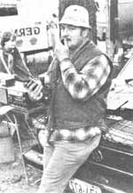

Copthorne Macdonald is the inventor of slow-scan television ...a method of amateur radio transmission that allows ham operators to both hear and see each other during shortwave broadcasts.
2-METER FM: THE DETAILS
In the last NDR column, Jerry Rosman (KA7FTN) told us how mountaintop radio relay stations provide a communications lifeline linking his remote homestead with the outside world. Jerry's experience is by no means unusual, either. In fact, VHF communication via repeaters has become the mode of choice for "telephone quality" conversations at distances of up to 100 miles. Here's how it works:
Cy Curier (KITES) holds a
portable 2-meter FM rig at the
DeerField Hamfest.
Ham operators with 2-meter FM equipment commonly use either 1- to 3-watt hand-held transceivers or 1- to 10-watt mobile units. Direct communication from rig to rig is possible, but the broadcasting range is only a few miles, even in average terrain. However, when the low-power transceivers communicate indirectly-through an intermediary known as a repeater-a truly useful system comes into being. To understand how it works, think of a repeater as a receiver connected to a transmitter: It listens on one frequency and then automatically retransmits whatever it hears on a different wavelength.
The communication leverage provided by such relay stations is due primarily to their extremely favorable locations ...and, as you can likely imagine, 2-meter FM'ers always seem to be on the lookout for good repeater sites. Hams who work for TV stations have, in many instances, obtained permission to put their repeaters high on the stations' antenna towers. In other cases, members of radio clubs have chipped in to rent space and power from commercial microwave operators with desirable mountaintop locations.
The beauty of this system is that all hams able to communicate with the repeater are also able to communicate with one another! It's quite possible, for instance, for two operators who are 50 miles apart to chat with perfect clarity, using only low-power walkie-talkies ...all with the help of a well-situated repeater. And if you use a more powerful transceiver connected to a directional beam antenna as Jerry does distances of 200 miles or more can sometimes be spanned!
The telephone autopatch is a bonus feature, built into certain repeaters, that allows the user to place telephone calls by radio. The caller first sends TouchTone signals over the air to the repeater, and those sounds activate the repeater's autopatch circuitry ... which then connects the receiver's unit to a telephone line. Next, the user sends more tones to "dial" the desired phone number ...and from then on, the process is much like using one of the phone company's mobile telephones. (Of course, you still must observe the rule about not using ham radio for business: You can use an autopatch setup to make emergency medical calls, for example, but you can't call the local feed store and order a bag of grain.)
Some repeaters are open to any ham who wants to jump in and use them. Others, however, are "closed" ...or available only to club members, who know a secret access code. In all, several hundred repeaters are now in use, scattered over most of North America and Europe. If you're interested in hooking up with one of them, you can learn the operation frequencies of those in your area by contacting the nearest amateur radio group. (A directory of ham club addresses can be obtained by sending a self-addressed, stamped envelope to American Radio Relay League, Dept. TMEN, 225 Main Street, Newington, Connecticut 06111.)
One final benefit of the 2-meter FM mode of operation is that you need only a Technician Class FCC license to join in the action. While the theory test for this particular license is the same as is that for a General Class permit, the Technician's code test requires a speed of only 5 words per minute instead of 13 ... which is a much more easily attainable goal.
AN EAST COAST GET-TOGETHER
Last May, I had an opportunity to meet some of the eastern NDR folks ...and doing so proved to be a real treat! For the past several years, you see, Bob Robinson (K1PRR) has attended the Deerfield Hamfest-a giant radio flea market held each May in Deerfield, New Hampshire-and he thought that the event would be a good place to rendezvous. Six of us made it there: Lee Branum (KL71JG), Greg Bluhm (N1BHQ), Cy Currier (KITES), and Tim McEntee (WD4KN0), in addition to Bob and me. The festival was made even better for me by the excitement of seeing old friends whom I'd never met ... which is one of the paradoxical experiences ham radio makes possible! I'm already looking forward to next year's hamfest.
USING SOLAR CELLS
Have you been thinking about trying to provide for your homestead's electrical needs using solar power? Or would you just like to play around with photovoltaic hardware? Or, perhaps you've long dreamed of running your radio setup on a renewable source of energy. Well, if any of these notions appeal to you, Bob Crozier has put together a nifty little 100-page book that you'll probably find of value. Entitled Introduction to Solar Cells and Solar Cell Projects, it's a very useful reference ... full of hints and practical how-to information. Bob discusses the techniques necessary to solder the cells ...combine a number of the units into a weatherproof solar panel ...and even break them up in order to get two low-current cells from a single high-current one. The book-which also includes a list of suppliers for cells, manufactured panels, and other components needed for photovoltaic projects can be ordered by sending $4.95 (postpaid) to Desert Publications, Dept. TMEN, Cornville, Arizona 86325. Bob and his wife Joan are currently working up a second booklet which will describe how to switch a home over to solar electricity in stages ...and I'm looking forward to seeing that volume, too.
Peace,
Cop Macdonald (VE1BFL)
P.O. Box 2941
Charlottetown
Prince Edward Island
Canada CIA 8C5
New Directions Radio is an international network of radio amateurs concerned with those ways of using ham radio (and related modes of communicating) that promote our own growth as individuals, and that we perceive as helping to create a more aware, more caring, and more responsible human society. We encourage all who share these interests to work with us. A current schedule of on-the-air activities is included in each issue of the bi-monthly New Directions Roundtable Newsletter, published by Art Mourad (WB2POB) as a service to the rest of us. To subscribe, send 25! for each issue desired to Art Mourad, Dept. TMEN, P.O. Box 787, Bergenfield, New Jersey 07621.
|
|
 |
|